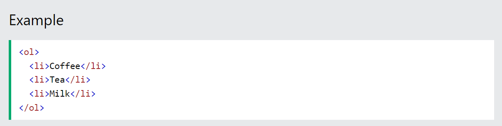

History of HTML Versions

Introduction to Versions of Html
HTML (HyperText Markup Language) is a special language that helps us create and structure web pages on the internet. A website is simply a collection of multiple web pages, and HTML is an important element in creating any web page.
We can use different tags in HTML to define different parts of the web page. You put tags around your content to give it meaning, like special labels. For example, for the occasion heading, you use the heading tag: < h1 >. For the date and venue, you use the < h2 > (smaller heading) and < p > (para) tags.
HTML at beginning
Tim Berners-Lee, a physicist at the CERN research institute in Switzerland invented HTML in 1991. This first version consisted of 18 HTML tages.
Now, there are currently about 140 HTML tags, although not all of them are supported by modern browsers. Learn more about Tim Berners-Lee here:
Tim Berners-Lee
.jpg)
Different Versions of HTML
The various major versions of HTML are as follows:
1. HTML 1.0
One of the first versions of HTML, HTML 1.0, was released in 1993, laying down the foundations for building web pages. Some of its primary characteristics were:
Structuring Elements: HTML 1.0 introduced elements that made it possible to add structure to the content on web pages. These included headings, lists, paragraphs, and images.
Comparatively Simpler: HTML 1.0 was very simple in comparison to later versions of HTML. It didn’t have styling options or the ability to control how content would display in a web browser. Additionally, HTML 1.0 lacked any support for tables.
Font Support: Although HTML 1.0 introduced fonts, it was limited. In other words, there was minimal scope for changing the text style or size.
2. HTML 2.0
The HTML 2.0 version was released in 1995 and had considerable improvements from the previous version. Some of them were:
Standardization of HTML: This version made HTML into a standard by establishing common rules and regulations that all web browsers had to follow.
Forms: Most importantly, HTML 2.0 introduced the concept of forms, which allowed users to input data on web pages. However, the forms were still basic and only contained text boxes and buttons.
Tables: HTML 2.0 introduced the
tag for creating tabular data on web pages, contributing to better organization of data.
Formation of the W3C: During HTML 2.0, browsers started making their own tags, because of which there was inconsistency across different browsers. To resolve the issue and establish standardization, the W3C (World Wide Web Consortium) was formed. This helped web browsers to render tags in a consistent manner.
3. HTML 3.2
HTML 3.2 was the next major successor to HTML 2.0 and was developed in 1997. The updated features included in it are:
Upgraded Form Elements: HTML 3.2 brought better ways to create interactive forms on websites. Developers could make forms that were more interactive and dynamic for users.
CSS Support: Another important feature included in HTML 3.2 was support for CSS (Cascading Style Sheets). It helped designers improve the look of web pages by styling and customizing HTML elements.
Enhanced Image Features: Handling images became easier with HTML 3.2. It allowed for better control over image size, alignment, and text descriptions.
Extended Character Set: HTML 3.2 also expanded the available characters for web pages. It included special symbols and international characters for a more diverse presentation of the content.
4. HTML 4.01
HTML 4.01, released in 1999, brought several advancements to the HTML language. Here are some of the updated features:
CSS Linking: Previously, one had to place CSS on each page to apply the styles. However, with 4.01, CSS files could be linked and included in each HTML page using the < link> tag. This helped maintain consistent styles across web pages without repeating CSS code.
New Tags: HTML 4.01 also introduced some new tags like “< fieldset>”, “< header>”, “< footer>”, and “< legend>”. These tags consequently enhanced the presentability of the content.
Table Enhancement: In addition, HTML 4.01 made tables more powerful. We could use attributes like ‘colspan’ and ‘rowspan’ to make cells in a table span across multiple columns or rows. This made it easier to create more complicated and interesting tables.
5. XHTML 1.0
XHTML 1.0 stands for Extensible HyperText Markup Language 1.0 and was released in 2000.
Strict Standards and Compatibility: XHTML 1.0 is similar to HTML but has a stricter version with more stringent rules for elements, attributes, and syntax. Due to such strict criteria, a common standard was created for web pages. This reduced the scope for incompatibility between browsers.
Compatibility with XML: XHTML 1.0 offered compatibility with XML tools. It meant that XML parsing libraries and transformation tools, commonly used for working with XML documents, could also be utilized with XHTML documents.
Future Adaptability: Furthermore, XHTML 1.0 documents were easily adaptable to any future versions of HTML or XML without any significant changes.
6. HTML5
WHATWG released the initial public draft of HTML5 in 2008, but it officially became a W3C recommendation on October 28, 2014.
New Form Elements: One important addition was the < input type=”email”> tag, which confirms whether the user input is a valid email address. Likewise, another form element was the < input type=”password”> tag, which was designed to capture passwords securely. The browser displayed special symbols as user input in the password field, thereby protecting the password from being revealed.
Audio Tag: HTML5 introduced the < audio> tag, allowing developers to embed audio content directly into web pages. This tag enabled the seamless integration of audio clips and allowed playing audio directly on the webpage.
Semantic Tags: Semantic tags, also known as structural tags, provide organization and structure to HTML pages. These tags provided a clearer hierarchy and meaning to different sections of a webpage. A few of the semantic tags introduced in HTML5 include < figcaption >, < header >, < footer >, etc. These tags also helped enhance the accessibility and search engine optimization of the webpage.
Section Tag: The < section > tag defines a distinct section within an HTML page. This helps in organizing and delineating content, thereby providing logical divisions within the webpage. Using semantic tags with a Bootstrap Dashboard Template enhances web application design and usability, providing a responsive and visually appealing interface.
HTML Timeline

Future of HTML
HTML is an essential part of web-related product creation. Moreover, it will continue to be a necessary tool for developers. We can only expect new tools and features as devices become more powerful and tech advances. This ever-evolving language will remain crucial for web development for years to come. Of course, HTML will keep evolving. It’ll continue to give devs new tools and features in future stages. This approach can make creating unique websites more straightforward than ever. Our Full-Stack Developer, Jorge Espinoza, also had some thoughts to share about it:“HTML is not a framework or library, so it has no replacement, and 100% of web platforms use it. Future features could focus on the cutting framework and libraries’ dependency. Also, it’ll be able to support more complex elements in native ways. In the same way, it will strengthen accessibility for people with different needs.”